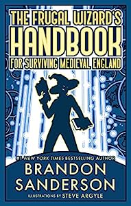

The Frugal Wizard's Handbook for Surviving Medieval England
⭐️⭐️⭐️⭐️
Format: audio (9 hours 11 minutes)
- Previously: Blood and Iron
- Next: Before They Are Hanged
You find out within the first few pages that the main character of this book has just awoken with some form of amnesia, in a different time and place, and they're trying to piece things together. While it felt a bit like an episode of Quantum Leap initially, that soon evolved, as they were actually in their own body, and didn't have a guy with a malfunctioning handheld computer there to help piece things together.
This book is unrelated to the rest of Brandon Sanderson's books. It's a mix of science fiction and fantasy, essentially in a parallel universe... in Medieval England. Given the character's amnesia, and the style of storytelling, I'll refrain from saying more. I finished this book in two days.
As silly as it is, I'm taking off a star, because I don't expect there will be any more books in this series, and that's disappointing.